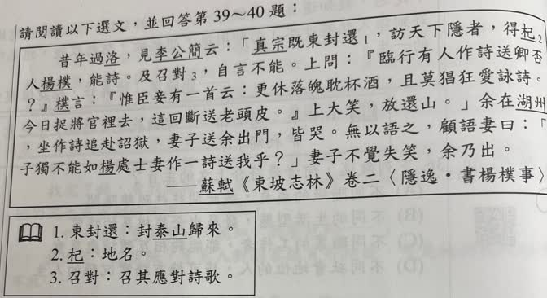
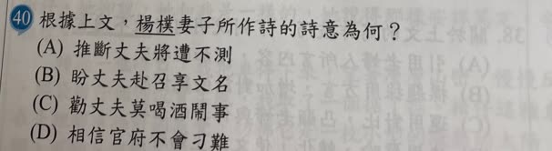

分享原卷｜第40題
完整原題
作答所需文章／材料
昔年過洛，見李公簡云：「真宗既東封還，訪天下隱者，得杞人楊樸，能詩。及召對，自言不能。上問：『臨行有人作詩送卿否？』樸言：『惟臣妻有一首云：更休落魄耽杯酒，且莫猖狂愛詠詩。今日捉將官裡去，這回斷送老頭皮。』上大笑，放還山。」余在湖州，坐作詩追赴詔獄，妻子送余出門，皆哭。無以語之，顧語妻曰：「子獨不能如楊處士妻作一詩送我乎？」妻子不覺失笑，余乃出。 ——蘇軾《東坡志林》卷二〈隱逸・書楊樸事〉 【原題註釋】 1. 東封還：封泰山歸來。 2. 杞：地名。 3. 召對：召其應對詩歌。先想一想，再查看答案、解說與原圖
逐項解析
| 選項與原句 | 判讀 | 句意與判斷理由 |
|---|---|---|
| (A) 推斷丈夫將遭不測 | 應選 | 今日捉將官裡去、這回斷送老頭皮，字面表達此行可能喪命的不測之憂。 |
| (B) 盼丈夫赴召享文名 | 不選 | 詩中沒有盼望藉應召得到文名，反而以赴官府可能送命作誇張。 |
| (C) 勸丈夫莫喝酒鬧事 | 不選 | 只看前兩句而忽略後兩句；詩也未說丈夫因喝酒鬧事而受召。 |
| (D) 相信官府不會刁難 | 不選 | 放還山是後來的結果，不是斷送老頭皮這兩句所表達的意思。 |
詳細說明與解題步驟
【全段白話】
從前經過洛陽時，我見到李公簡，他說：「宋真宗到泰山封禪回來，尋訪天下隱士，找到杞地一位擅長作詩的楊樸。等到皇帝召見問話時，楊樸卻說自己不會作詩。皇帝問：『臨行前有人作詩送你嗎？』楊樸說：『只有我的妻子作了一首：別再失意沉醉於酒，也別再狂放地喜愛吟詩。今天被捉到官府，這回恐怕要丟掉老命了。』皇帝聽了大笑，放他回山裡。」
我在湖州時，因作詩而被追捕、送往詔獄。妻子兒女送我出門，都哭了。我不知道用什麼話安慰他們，就回頭對妻子說：「你難道不能像楊處士的妻子，作一首詩來送我嗎？」妻子不由得笑了，我這才出門。
「坐」指因……獲罪；「妻子」在此包含妻子與兒女；「失笑」是不由自主地笑出來，不是笑話別人失敗。
【先看題目問的是哪一首詩】
本題問楊樸妻子詩句的意思，不是問蘇軾後來借這個故事開玩笑的用意。「今日捉將官裡去，這回斷送老頭皮」字面上說這回被官府捉去，恐怕要送命，最符合A。
全段敘事帶有詼諧色彩，「斷送老頭皮」也是誇張說法，不表示詩的內容真的成為預言。真宗最後大笑、放還山，是事情的結果；不能因此倒推詩句的意思是相信官府不會刁難。C只接近前兩句勸戒的表面，漏掉後兩句的不測之憂，而且原詩沒有說楊樸喝酒鬧事。
① 題目問楊樸妻子的詩意
先抓今日捉將官裡去、這回斷送老頭皮。後兩句以誇張語氣說這一去恐怕要送命，字面表達對丈夫遭逢不測的擔憂，最符合 A。送別圖是情境示意，不是後來真的遇害。
② 大笑放還山，是後來的結果
真宗聽詩後大笑，讓楊樸回山裡，這是事情後來的發展。不能因為結果平安，就把詩意倒推成相信官府不會刁難。讀詩時的擔憂，和敘事的結果，屬於不同層次。
③ 蘇軾借故事，轉化送別的悲傷
後半段換成蘇軾被追赴詔獄，家人哭著送他。他借楊樸妻子的詩開玩笑，使妻子不由得笑了。這是蘇軾借典安慰家人的作用，不能和前一首詩的字面意思混在一起。
④ 詩中的不測之憂，不能用後來結果倒推
答案 A：推斷丈夫將遭不測
- 最關鍵是後兩句的不測之憂，不是實際遇害預言。
- C 只顧前兩句，也多加了詩中沒有的喝酒鬧事。
- D 把後來獲釋的結果，誤當成贈詩原本的意思。
核對註記：已依原卷或完整文字核對並獨立解題；對應教材課次未確認，歸綜合。
原圖（僅本題）

